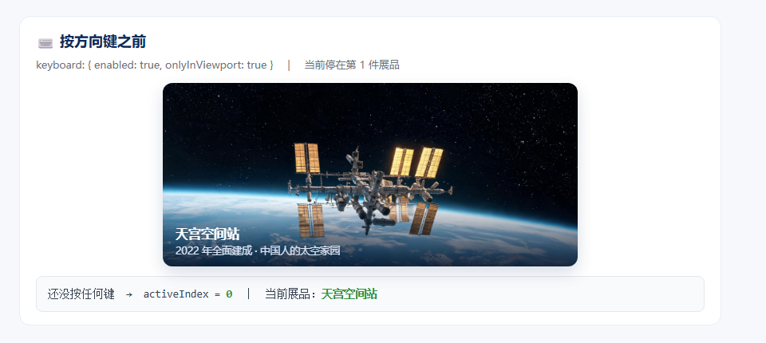
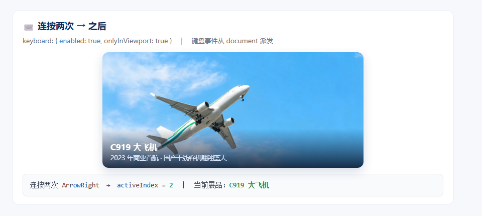

页面：swiper-task.html ｜ 作者：邵玉紫檬 ｜ 模型：DeepSeek-V4.1-Flash ｜ 建立时间：2026-11-11
#wySw4，要求：循环、3.2 秒自动播放、分页器可以点击，效果是 cube。new Swiper('#wySw4', {
loop: true,
effect: 'cube',
autoplay: { delay: 3200 },
pagination: { clickable: true }
});
验证后发现：只写了 clickable 没写 el，页面上一个圆点都没渲染；也没写 speed，切换动画用的是默认 300ms。
#wySw4，逐条满足：1）loop 设为 true 表示无缝循环；2）autoplay.delay 为 3200 毫秒，且 disableOnInteraction 设为 false（用户拖动后自动播放继续）；3）pagination 的 el 是 #wyPag4，且 clickable 设为 true；4）初始 effect 设为 'cube'；5）speed 设为 800。new Swiper('#wySw4', {
loop: true,
effect: 'cube',
speed: 800,
autoplay: { delay: 3200, disableOnInteraction: false },
pagination: { el: '#wyPag4', clickable: true }
});
关键差别：第 1 轮用自然语言描述，第 2 轮把每条需求拆成"编号 → 参数名 → 期望值"，AI 就没法漏项。
creativeEffect 里 prev / next 的 transform 写法，说明每个字段控制什么；然后为演示四写第 7 种效果「creative 电影墙」：上一张缩小、左移、带角度，下一张放大右移进场。creativeEffect: {
prev: { shadow: true, translate: ['-35%', 0, -220], rotate: [0, 18, 0], scale: 0.78, opacity: 0.85 },
next: { shadow: true, translate: ['100%', 0, 0], scale: 1.18 }
}
怎么读：prev / next 描述的是"这张幻灯片待在左侧 / 右侧等待区时的形态"，切换动画就是在"等待区形态"和"当前位"之间插值；translate 三项是 [x%, y%, z像素]。
产出：swiper-imgs/aida_modu_1.jpg，尺寸 2560×1440（正好 16:9），四个演示台各插入一张结构完整的 swiper-slide。
mousewheel 会抢走整页滚动，长页面里体验很差；zoom 要配合双击 / 双指手势，演示成本高；parallax 需要多层背景图，现成素材不够。keyboard 一条配置就能演示，而且有真实使用场景（大屏展馆、无障碍访问）。
落地代码（演示一 #wySw1）var swiper = new Swiper("#wySw1", {
keyboard: {
enabled: true, // 开启键盘控制
onlyInViewport: true, // 只有轮播出现在视口内时才响应，避免抢占页面滚动
},
});
实测：连按两次 →，activeIndex 由 0 变 2；轮播滚出视口后按键不再响应。

